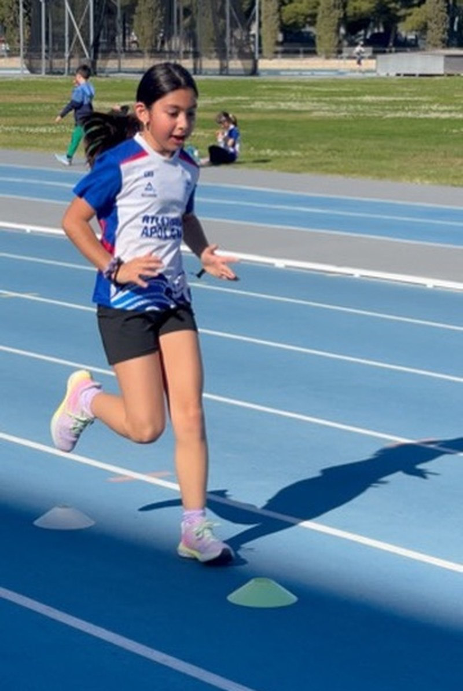
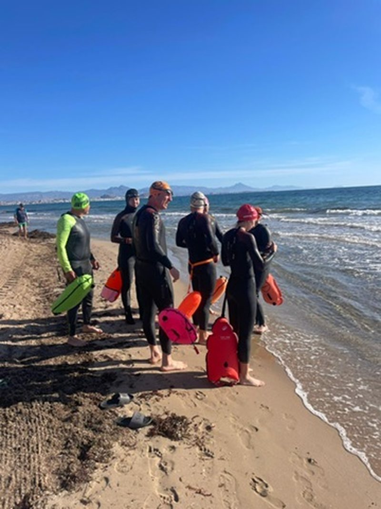
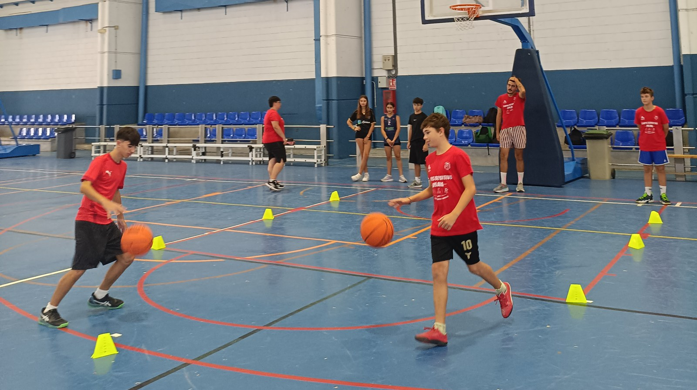

Escuela de atletismo
Iniciación y desarrollo del atletismo: correr, saltar y lanzar en forma de juego en las categorías pequeñas, y especialización cuando toca.

Escuela de natación
Aprendizaje y perfeccionamiento en las piscinas del Tossal y Vía Parque, con grupos reducidos y opción de competir en federado.

Escuelas municipales
Atletismo, triatlón y deporte adaptado dentro del programa del Ayuntamiento de Alicante, los tres gestionados por el club: mismos entrenadores y misma metodología. La inscripción y el precio los fija Deportes Alicante.

Campus de verano
Días de deporte, juegos y piscina para los meses sin cole. Las inscripciones se abren en mayo; entra para ver cómo fue y avisarte.
Apuntar a un hijo no exige hacerse socio: la cuota de cada escuela lo incluye todo. Hay descuento para hermanos, y cada escuela lo dice en su página junto al precio.
¿No sabéis cuál es la suya?
Contestad cuatro preguntas y os decimos qué escuela y qué grupo le encajan por edad. Y si ya lo tenéis claro, se puede probar antes de decidir.